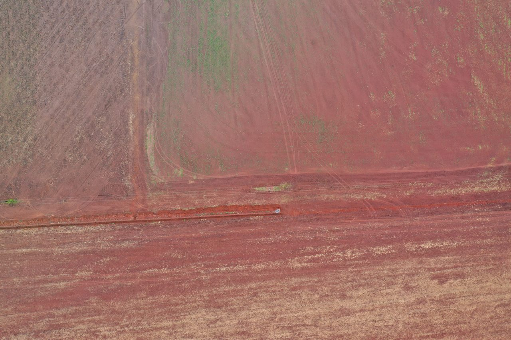
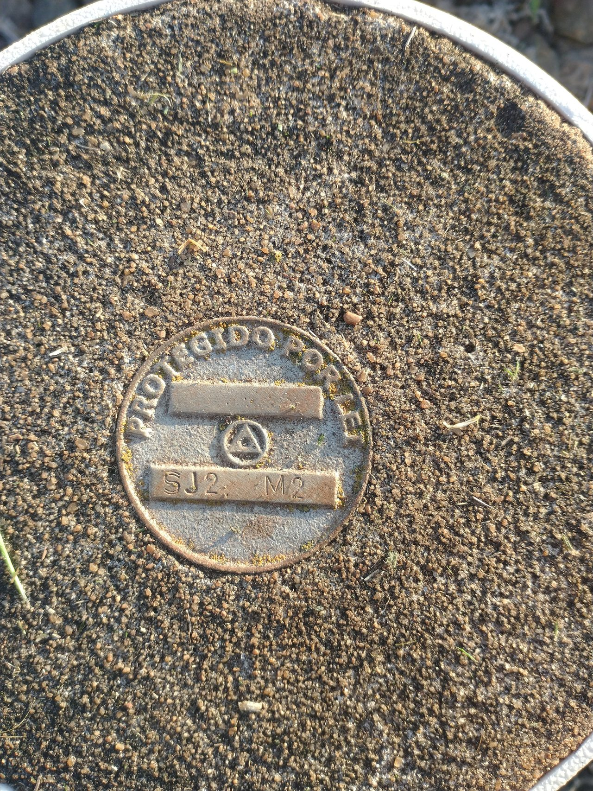
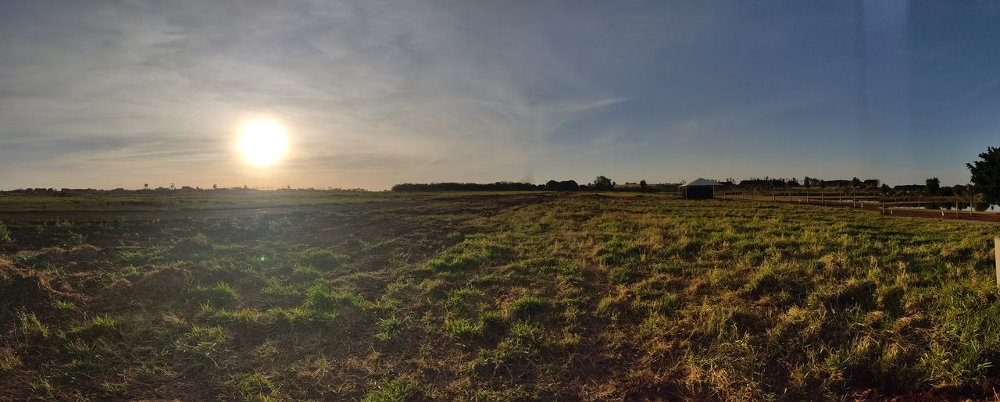
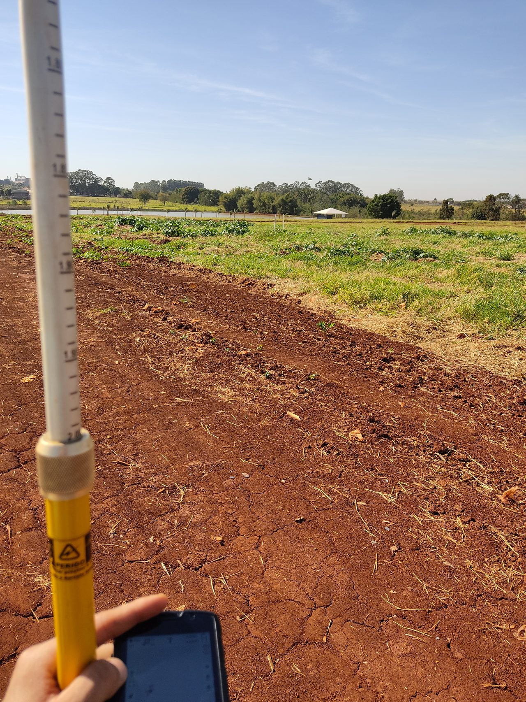
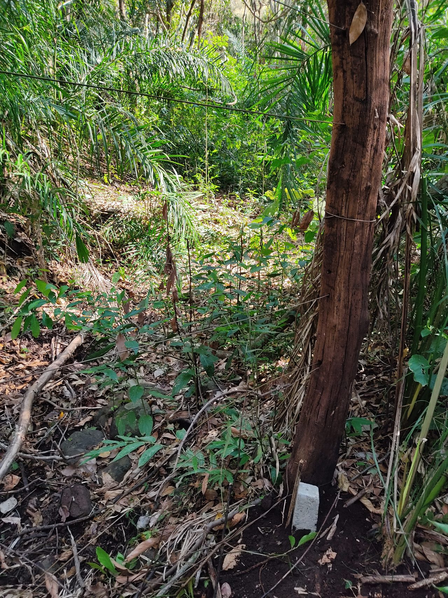
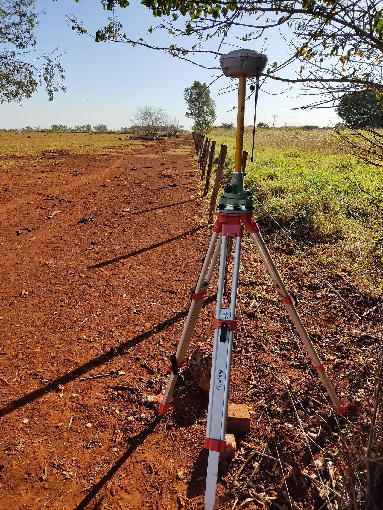
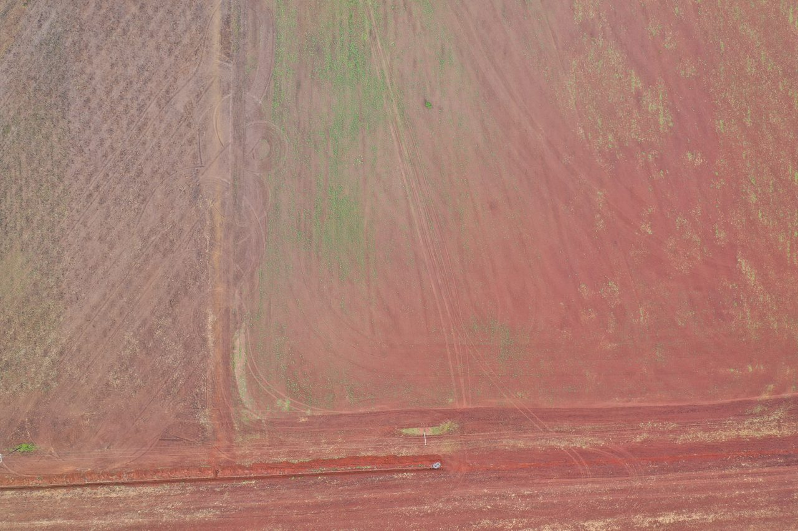
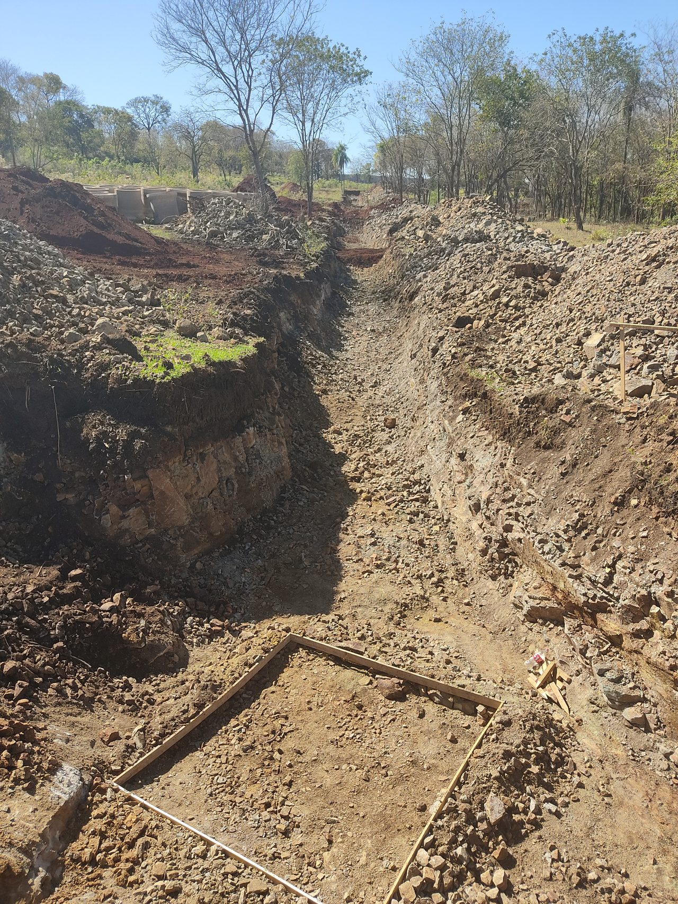
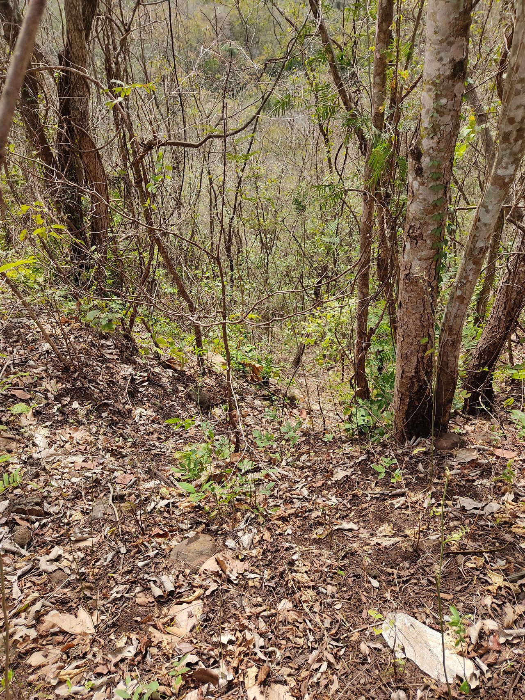
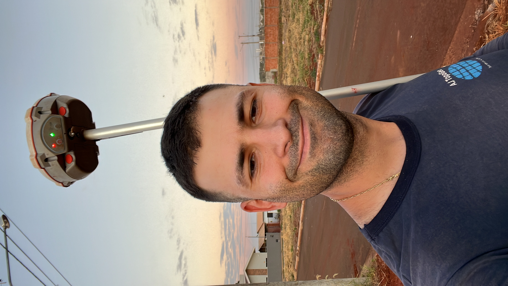

Notícia · Georreferenciamento
Georreferenciamento obrigatório ampliado até 2029: o que muda
O Governo Federal prorrogou o prazo do georreferenciamento. Veja a nova data e por que antecipar é a melhor decisão.
Ler artigo →Conteúdo prático sobre topografia, georreferenciamento, CAR, ITR e regularização de imóveis. Tire suas dúvidas com quem entende de engenharia geoespacial.
O Governo Federal prorrogou o prazo do georreferenciamento. Veja a nova data e por que antecipar é a melhor decisão.
Ler artigo →
MS abriu prazo para regularizar barragens no IMASUL. Quem precisa, o que é exigido e multas de até R$ 20 mil.
Ler artigo →
Entenda em quais situações a certificação no INCRA é exigida e por que ela é essencial para a segurança jurídica da sua propriedade.
Ler artigo →Saiba o que é o CAR, por que ele é obrigatório e o passo a passo para regularizar a situação ambiental do seu imóvel no SICAR.
Ler artigo →
Veja como funciona o Imposto Territorial Rural, o que considerar na declaração e como pagar menos de forma legal e segura.
Ler artigo →
Entenda os fatores que influenciam o preço da topografia e como pedir um orçamento justo e transparente.
Ler artigo →
O que é usucapião, os requisitos e o papel da planta e do memorial descritivo georreferenciados no processo.
Ler artigo →
A diferença entre planimetria e altimetria, o levantamento cadastral e quando esse serviço é necessário.
Ler artigo →
Como os índices de vegetação revelam o que o olho não vê e reduzem custos com insumos em até 35%.
Ler artigo →
O que define o valor do georreferenciamento rural em Mato Grosso do Sul e como pedir um orçamento justo.
Ler artigo →
Levantamento, demarcação de lotes e locação de obra para loteamentos urbanos e rurais em MS.
Ler artigo →
Como escolher um bom escritório de topografia em Mato Grosso do Sul e por que a AJ TopoGeo é referência.
Ler artigo →
Como o drone e os índices de vegetação aumentam a produtividade no agronegócio de Mato Grosso do Sul.
Ler artigo →
A diferença entre unir e dividir imóveis e como regularizar com segurança jurídica em Mato Grosso do Sul.
Ler artigo →
Como a topografia por drone gera mapas precisos de grandes áreas em pouco tempo em Mato Grosso do Sul.
Ler artigo →
O que é o georreferenciamento de imóveis urbanos, quando o SIG-RI é exigido e como regularizar lotes na cidade.
Ler artigo →
Como a topografia e o drone definem corte e aterro, reduzindo o custo da movimentação de terra na obra.
Ler artigo →
Como obter autorização para supressão de vegetação de forma legal e o que é o Documento de Origem Florestal.
Ler artigo →
Quando a área da matrícula não bate com a real e como corrigir os limites do imóvel em Mato Grosso do Sul.
Ler artigo →O sistema do INCRA que certifica imóveis rurais georreferenciados — entenda como funciona e o passo a passo.
Ler artigo →A diferença entre geoprocessamento e georreferenciamento e como ele transforma dados em decisões.
Ler artigo →
O que faz cada profissional, quem assina a responsabilidade técnica (ART/CFT) e qual contratar.
Ler artigo →Fale com nossa equipe técnica e receba orientação para o seu caso.
📲 Falar com Especialista